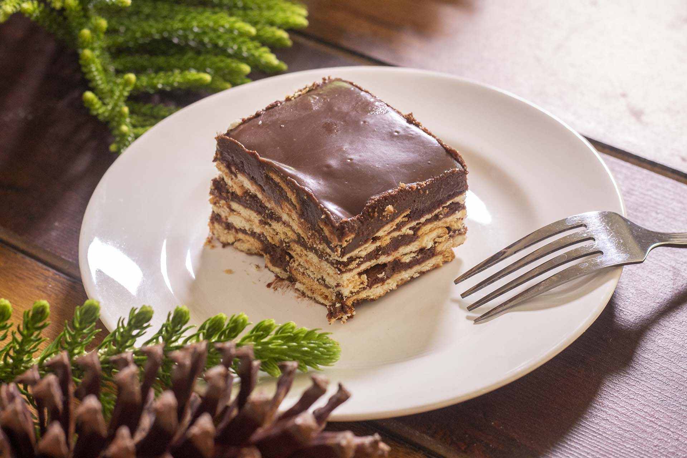

Chocolate Biscuit Pudding

Description
Chocolate biscuit pudding is a delightful no-bake dessert made by layering plain or digestive biscuits with a creamy, chocolatey mixture created from cocoa powder, sugar, butter, and milk or condensed milk. The biscuits soften as they absorb the chocolate sauce, resulting in a lusciously moist and indulgent treat. Variations may include whipped cream, nuts, or fruits for added texture and flavor, and the dessert is typically chilled in the refrigerator, making it a convenient and satisfying choice for chocolate enthusiasts and gatherings.
Ingredients
- Plain or digestive biscuits (around 200-250 grams)
- Unsweetened cocoa powder (3-4 tablespoons)
- Granulated sugar (1 cup)
- Unsalted butter (100-150 grams)
- Milk or condensed milk (1 cup)
- A pinch of salt
- In a saucepan, melt the unsalted butter over low heat.
- Once the butter is melted, add the granulated sugar and cocoa powder to the saucepan. Stir well to combine and form a smooth chocolate sauce. Add a pinch of salt to enhance the flavor. If you're using condensed milk, you can add it at this stage as well, stirring until the mixture is well blended.
- Remove the saucepan from heat and let the chocolate sauce cool slightly.
- Take a deep rectangular or square dish (usually a 9x9-inch or similar size) and start by spreading a thin layer of the chocolate sauce on the bottom.
- Dip each biscuit into the chocolate sauce, coating both sides, and then arrange them in a single layer at the bottom of the dish. Continue this process, layering the chocolate-coated biscuits to cover the entire bottom of the dish.
- Pour some of the chocolate sauce over the biscuit layer, ensuring even coverage.
- Repeat the process by adding another layer of chocolate-coated biscuits on top of the sauce.
- Continue layering biscuits and chocolate sauce until you run out of ingredients, finishing with a layer of chocolate sauce on top.
- Cover the dish with plastic wrap and refrigerate the pudding for at least a few hours, or preferably overnight, to allow the flavors to meld and the dessert to set.
- When ready to serve, cut the chocolate biscuit pudding into squares or slices, and enjoy!